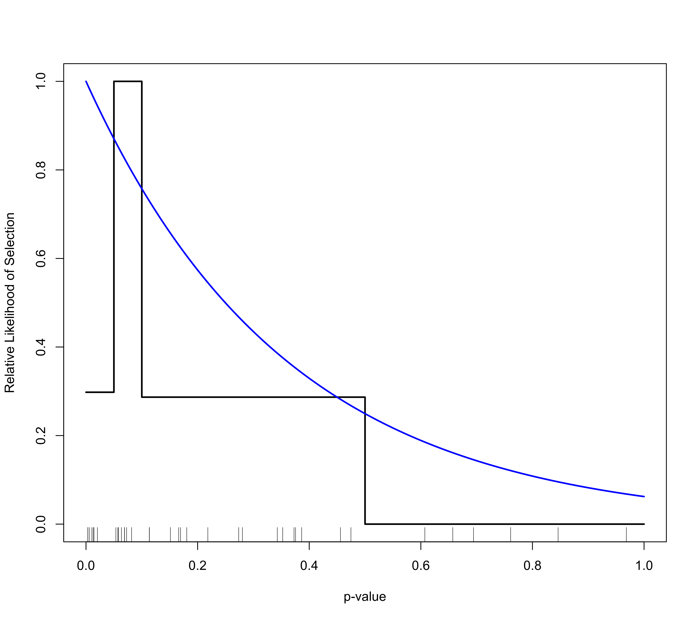
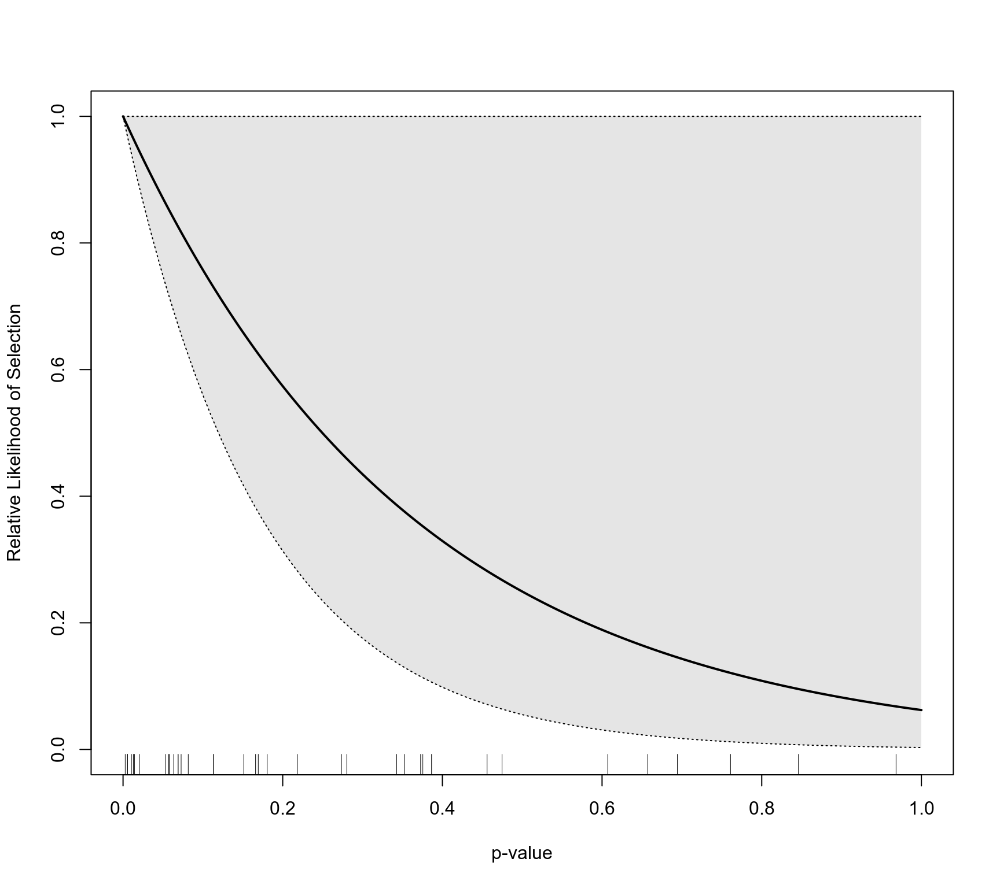

plot.rma.uni.selmodel.RdFunction to plot objects of class "plot.rma.uni.selmodel".
an object of class "rma.uni.selmodel" obtained with selmodel.
x-axis limits. Essentially the range of p-values for which the selection function should be drawn. If unspecified, the function sets the limits automatically.
y-axis limits. If unspecified, the function sets the limits automatically.
numeric value to specify for how many p-values within the x-axis limits the function value should be computed (the default is 1000).
either a character string (with options "max", "min", "mean", or "median") or a numeric value. See ‘Details’.
logical to specify whether the function values should be rescaled to a 0 to 1 range (the default is FALSE).
logical to specify whether a confidence interval should be drawn around the selection function (the default is FALSE). Can also be a string (with options "boot" or "wald"). See ‘Details’.
numeric value to specify the number of bootstrap samples to draw for generating the confidence interval bounds (the default is 1000).
logical to specify whether the confidence interval region should be shaded (the default is TRUE). Can also be a character vector to specify the color for the shading.
logical to specify whether the observed p-values should be added as tick marks on the x-axis (the default is TRUE).
logical to specify whether the function should be added to an existing plot (the default is FALSE).
the line types for the selection function and the confidence interval bounds.
the line widths for the selection function and the confidence interval bounds.
other arguments.
The function can be used to draw the estimated selection function based on objects of class "plot.rma.uni.selmodel".
When the selection function incorporates a measure of precision (which, strictly speaking, is really a measure of imprecision), one can specify for which level of precision the selection function should be drawn. When prec="max", then the function is drawn for the least precise study (maximum imprecision), when prec="min", then the function is drawn for the most precise study (minimum imprecision), while prec="mean" and prec="median" will show the function for the mean and median level of imprecision, respectively. Alternatively, one can specify a numeric value for argument prec to specify the precision value (where prec="max" corresponds to prec=1 and higher levels of precision to prec values below 1).
When ci=TRUE (or equivalently, ci="boot"), a confidence interval is drawn around the selection function. The bounds of this interval are generated using parametric bootstrapping, with argument reps controlling the number of bootstrap samples to draw for generating the confidence interval bounds. When both n and reps are large, constructing the confidence interval can take some time.
For models where the selection function involves a single \(\delta\) parameter, one can also set ci="wald", in which case the confidence interval will be constructed based on the Wald-type CI of the \(\delta\) parameter (doing so is much quicker than using parametric bootstrapping). This option is also available for step function models (even if they involve multiple \(\delta\) parameters).
Viechtbauer, W. (2010). Conducting meta-analyses in R with the metafor package. Journal of Statistical Software, 36(3), 1–48. https://doi.org/10.18637/jss.v036.i03
selmodel for the function to fit models for which the estimated selection function can be drawn.
### copy data into 'dat' and examine data
dat <- dat.hackshaw1998
### fit random-effects model using the log odds ratios
res <- rma(yi, vi, data=dat, method="ML")
res
#>
#> Random-Effects Model (k = 37; tau^2 estimator: ML)
#>
#> tau^2 (estimated amount of total heterogeneity): 0.0204 (SE = 0.0165)
#> tau (square root of estimated tau^2 value): 0.1427
#> I^2 (total heterogeneity / total variability): 27.62%
#> H^2 (total variability / sampling variability): 1.38
#>
#> Test for Heterogeneity:
#> Q(df = 36) = 47.4979, p-val = 0.0952
#>
#> Model Results:
#>
#> estimate se zval pval ci.lb ci.ub
#> 0.2171 0.0486 4.4712 <.0001 0.1219 0.3123 ***
#>
#> ---
#> Signif. codes: 0 ‘***’ 0.001 ‘**’ 0.01 ‘*’ 0.05 ‘.’ 0.1 ‘ ’ 1
#>
### fit step selection model
sel1 <- selmodel(res, type="stepfun", steps=c(0.05, 0.10, 0.50, 1.00))
### plot selection function
plot(sel1, scale=TRUE)
### fit negative exponential selection model
sel2 <- selmodel(res, type="negexp")
### add selection function to the existing plot
plot(sel2, add=TRUE, col="blue")

### plot selection function with CI
plot(sel1, ci="wald")
### plot selection function with CI
plot(sel2, ci="wald")
